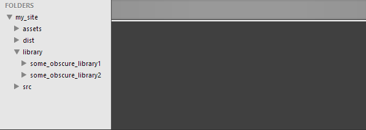
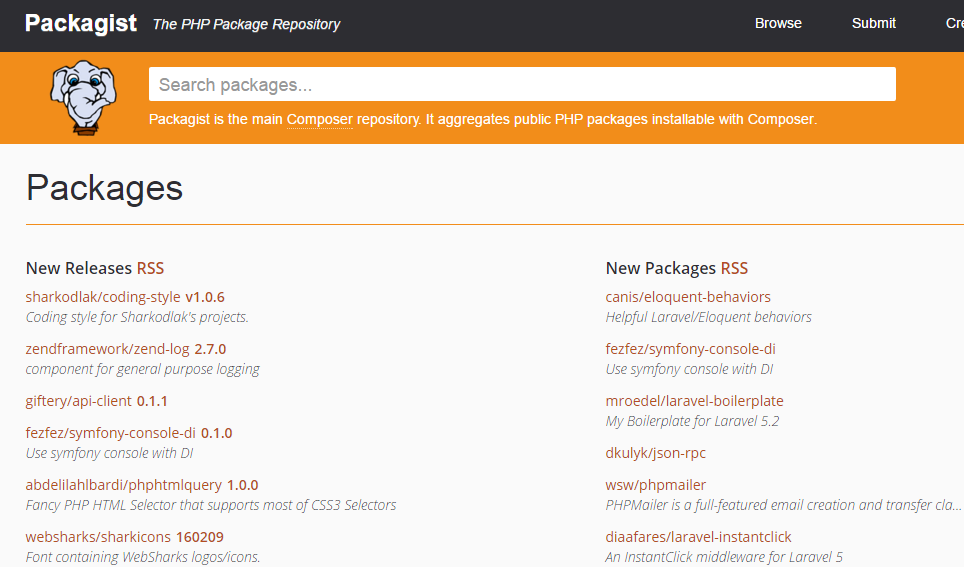

Devtools
use the arrow keys to navigate; press space for slide overview
DEVELOPMENT TOOLS
IDE
Text editor
-
features any decent text editor should have:
-
out of the box
- files & folders: navigation bar, projects, tabbed files
- editing: code folding, syntax highlighting, autocompletion and -indentation, on-the-fly syntax check, shortcuts, refactoring...
- search/replace: searching in folders, regular expressions
- runtime: debugging, running, ...
- extensible: plugins / packages management
-
at least with plugins
- EditorConfig support
- FTP/SFTP support
-
nice-to-haves
- various tools: code snippets, todo lists...
- various integrations: Git, Vagrant, Composer...
- advanced editing options: Zen Coding (Emmet plugin), multiple cursors, intelligent paste...
-
out of the box
PHPStorm
- PHPStorm has all this and lots more
- decent for Javascript, excellent for PHP
- normally quite expensive, but free for students!
- will be your microcosmos for many hours; start learning the basics!
EditorConfig (1)
- from their website:
EditorConfig [...] maintains consistent coding styles between different editors and IDEs.
- file format for indentation and end-of-line settings
- native editorconfig support or as plugin for most editors, including PHPStorm and SublimeText
EditorConfig (2)
-
create a
.editorconfigfile in the root of your project:
- include this file when versioning your project (e.g. Git)
DEVELOPMENT TOOLS
Package management
Classic workflow (1)
-
To create a new project, you would typically:
- create a subdirectory in your wwwroot, e.g.
my_site - create a directory structure (or probably copy from a previous project)
- create a subdirectory in your wwwroot, e.g.
assets: pdf's, designs, documentation...dist: public files, accessible to the browserlibrary: third party codesrc: source files, e.g. scss, typescripts, uncompressed images...
Classic workflow (2)
-
Then you would include some libraries:
- find library on the internet
- pick some version; download it
- extract it in some folder
- link it in your code
- use it
- [PRO] finally you version everything, e.g. with Git
Classic workflow (2)
-
To update a library (bugfix or new feature), you would
- remove the old library folder
- repeat the process: find, download, extract, link again
- cross your fingers and hope it still works (dependencies)
-
To distribute or deploy, you would:
- FTP or zip/send the whole thing
- Download and extract the whole thing again
-
This may be ok-ish if you work alone, but:
- versioning a library doesn't really make sense
- distributing code with libraries explodes download size
- changing or updating a library isn't easy when working in team
Hosted libraries?
-
Hosted libraries (Google, Microsoft, Baidu...) may sound like a solution...
- no unnecessary versioning
- no unnecessary distributed code
- changing, adding or updating a library is easier
-
...but:
- only works with single pages
- doesn't work with serverside code like PHP
- number of available libraries is limited
- download speed isn't always reliable, slowing down your pages
- security breach
Remember that if you include an externally hosted script, it can read anything that happens on each rendered webpage. This may be ok for Google or Microsoft, but beware of some never heard of third party.
Package management
-
Package management is automating the task of downloading, extracting and including third-party code:
- distribute your code without third party code
- include a dependencies configuration file
- each user installs dependencies by running install on this file
- A package may be a code library (PHP SwiftMailer, jQuery, fontawesome...) or development tool (LESS, Gulp...)
- Most popular package managers:
- for most projects, you will probaby need NPM, Bower and Composer together
Available packages
DEVELOPMENT TOOLS
NPM
About NPM
- NPM (Node Package Manager) focuses on NodeJS modules, mostly development tools like taks automation, minify etc...
Installing NPM
- NPN automatically comes with NodeJS.
-
Warning: modules like Bower and Gulp expect to be installed in the
AppDatafolder, not in the Program Files; if this is not the case, change the NPM directories with these commands:(source: stackoverflow.org)> npm config set prefix "C:\Users\YOURNAME\AppData\Local\npm" > npm config set cache "C:\Users\YOURNAME\AppData\Local\npm-cache" -
Make sure to add the NPM and NPM cache folders to your system's
PATHvariable, in Windows:C:\Users\YOURNAME\AppData\Local\npm;
C:\Users\YOURNAME\AppData\Local\npm-cache
global package install (1)
-
install a module globally: run
npm install -g <module_name>
- available for all projects
-
installed in
.../AppData/.../node_modulesfolder (Windows) or/usr/local/lib(Mac)
global package install (2)
- note that all subdependencies are also installed:
local package install (1)
-
install a module locally: run
npm install <module_name>
- available for the current project
local package install (2)
- installed in
<projectfolder>/node_modules -
exclude this folder from versioning with
.gitignore:
Installing a module locally makes it available for the project, but this does not mean it is available as a command in the shell. Sometimes you will even need to install it globally and locally. Some interesting reads:
- Locally installed versus globally installed NPM modules (stackoverflow.com)
- Global vs Local installation (nodejs.org)
- Why do we need to install gulp globally and locally? (stackoverflow.com)
package.json (1)
- how do others know which NPM modules your project requires?
-
add
package.jsonto the root of your project -
create one manually, or get helped by running
npm init:
package.json (2)
- distribute your project without installed npm modules:

- users will install all modules from
package.jsonby runningnpm install
Specifying versions
-
Version requirements uses semver syntax:
- exact version:
"4.2.1" - range:
">=4.1.6,<=5.0" - wildcard:
"4.1.*" - tilde:
"~4.1", equivalent of">=4.1,<5.0" - latest commit:
"dev-master"
- exact version:
DevDependencies
-
NPM (and also Bower, see later) allows you to specify
devDependencies, which you only need during development:
-
in production, ignore devDependencies by running
npm install -p
NPM commands (1)
-
Some useful NPM commands:
-
help creating a
package.json:> npm init -
install all modules listed in
package.json:> npm install -
install all modules listed in
package.json, but ignore devDependencies:> npm install -p -
install a module:
> npm install [module_name]
-
help creating a
NPM commands (2)
-
Some useful NPM commands (cont'd):
-
install a module globally:
> npm install [module_name] -g -
install a module, and add to
package.jsonas dependency:> npm install [module_name] --save -
install a module, and add to
package.jsonas devDependency:> npm install [module_name]; --save-dev -
list installed modules:
> npm ls
-
install a module globally:
NPM commands (3)
-
Some useful NPM commands (cont'd):
-
remove a module:
> npm uninstall [module_name] -
remove a module, and update package.json:
> npm uninstall [module_name] --save> npm uninstall [module_name] --save-dev -
check npm configuration:
> npm config ls -l -
check module version:
> npm [module_name] -v
-
remove a module:
NPM pitfalls
-
NPM is a great tool you can't live without, but has a few caveats:
-
NPM also installs subdependencies, subsubdependencies and so on. This may lead to a very deep tree, which in Windows may cause problems due to the maximum filename length limitation. A few solutions:
- remove the module that causes problems
- install NPM betaversion 3
- use the NPM dedupe module to flatten the tree as much as possible
- The same subdependency, e.g. jQuery, may be needed in multiple modules. NPM will install duplicates, which is not very disk-space efficient.
-
NPM also installs subdependencies, subsubdependencies and so on. This may lead to a very deep tree, which in Windows may cause problems due to the maximum filename length limitation. A few solutions:
- UPDATE: NPM version 3 is the new default version
DEVELOPMENT TOOLS
Bower
About Bower
- Bower aims at frontend libraries (HTML/CSS/Javascript/SVG...).
Installing Bower
-
It is available as NPM module, so install it globally:
> npm install -g bower -
Make sure it is installed in the
AppDatafolder, see this slide
Bower commands
-
Bower has many similarities with NPM, including the commands:
> bower init> bower install> bower install jquery --save> bower install qunit --save-dev> ...
bower.json (1)
-
the configuration file used for Bower is called
bower.json:{ "name": "my-project", "dependencies": { "jquery": "~2.1.4", "fontawesome": "*" } } - you can customize Bower with
.bowerrc, e.g. changing defaultbower_componentsinstallation directory tovendor:{ "directory": "vendor" }
bower.json (2)
- screenshot:
installing modules
-
install modules manually (see commands), or from
bower.jsonby runningbower install:
- note that libraries are cached
Modules location
-
A
vendorfolder is created containing installed dependencies; it should also be excluded from versioning:
- distribute your projects without
vendorfolder but withbower.json - never change the contents of this folder
Using bower modules
- To use the modules in your code, include resources like normally:
Bower pitfalls
- Bower doesn't install subdependencies like NPM; this results in a flat tree (nice!) but leaves more responsability to you
- Bower needs git:// port 9418 open; workaround with mod rewrite see git:// protocol blocked by company, how can I get around that? (stackoverflow.com)
DEVELOPMENT TOOLS
Composer
About Composer
- Composer specializes in PHP dependencies; install it from here. 
composer.json (1)
-
The configuration file is called
composer.json:

composer.json (2)
-
Run
composer install(the exact messages may differ):
- note: other necessary dependencies like Symfony are also downloaded
composer.lock (1)
-
Composer uses the
vendorfolder by default -
A
composer.lockfile is created:
composer.lock (2)
-
The
composer.lockfile contains the exact versions of the dependencies installed -
This file has precedence over
composer.jsonwhen runningcomposer install, i.e. it locks the project to those specific versions -
To install
composer.jsoninstead (e.g. when updated), removecomposer.lockor runcomposer update - you should git-version
composer.lockandcomposer.json
Using composer modules (1)
-
Using dependencies in PHP is as easy as it gets, thanks to the magic
autoload.phpgenerated by Composer:
Using composer modules (2)
-
All you need to do is include
autoload.php, and all classes become available. A basic twig example:
Using composer modules (3)
- the result:
- more details on Composer in Backend Development
DEVELOPMENT TOOLS
Code tools
Preprocessors
- A preprocessor takes one type of data and converts it to another type. Popular examples are:
-
Most are available as NPM package, some as a Ruby gem, so install Ruby first. Make sure to add the Ruby binary to your system's
PATHvariable, in Windows:
C:\Ruby21-x64\bin\;
Preprocessors – SASS (1)
-
Syntactically Awesome StyleSheets is an answer to some features badly missing in CSS:
- nested selectors
- operations
- extending selectors
- iterations, selections
- ...
- Like with any tool, there's of course a learning curve; it's up to you do decide if it's worth the investment (many do). A nice starting point is http://sass-lang.com/guide
Preprocessors – SASS (2)
-
Install SASS as a ruby gem with
gem install sass:
Preprocessors – SASS (3)
-
Create your .scss files; a good location is
/src/scss/:
Preprocessors – SASS (4)
-
Now SASS-parse your code with
sass source destination:
Debugging might be difficult with preprocessing, as code inspection shows you the generated code, not the original source. Luckily modern browsers support a technique known as 'source mapping' — I'm sure you can find more info on Google.
Minifyers
-
minifiers compress your HTML, CSS and/or JS resources with a bunch of tricks:
- removing comments and unnecessary whitespaces
- removing other unnecessary characters like block delimeters etc...
- shortening names of variables, functions etc...
- combining multiple files in one file (CSS & JS)
-
minifying has its advantages:
- reduces page load
- less files means faster download times
- may serve as some kind of code obfuscation
- it is not the same as compression or encryption: the code is still immediately interpretable, without decompression or decryption.
- I'm sure you can figure out how to get it working yourself
Linting tools
DEVELOPMENT TOOLS
Task runners & installers
Task automation (1)
-
With a
.jshintconfiguration file, git-requiredreadme.mdand a.gitattributesfile solving line endings problems between Linux and Windows, our boilerplate is almost ready:
Task automation (2)
Task automation – Gulp (1)
- Gulp or Grunt, both have their fanbase. An example for gulp:
Task automation – Gulp (2)
- Run gulp to sass-compile & minify:
Installer script
-
Quite a few modules are used; you can speed up the process by installing them all in 1 line:
> npm install gulp del gulp-minify-css gulp-notify gulp-rename gulp-ruby-sass --save-dev -
Better still: write a shell script
install.sh#!/usr/bin/env bash if which bower >/dev/null; then echo "Bower is required. Installing Bower…" npm install -g bower bower install else bower install fi ... - Run gulp to sass-compile & minify:
DEVELOPMENT TOOLS
What's next?
Vagrant
-
We covered most development tools within a certain environment. There are a few questions unanswered though:
- how can team members working on the same project share exactly the same environment?
- how can you keep development and production environment synchronized?
- how can you test your product on different environments?
- You could of course share one or more virtual machines, but a very promising lightweight alternative is Vagrant. From their website:
With Vagrant you can create and configure lightweight, reproducible, and portable development environments.
- Vagrant is outside the scope of this course, but I strongly advise you as a web professional to take a deep look into it